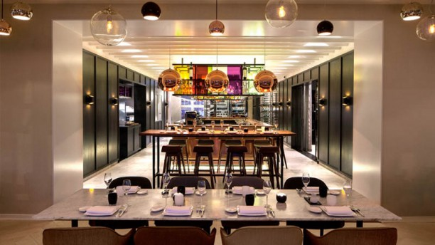
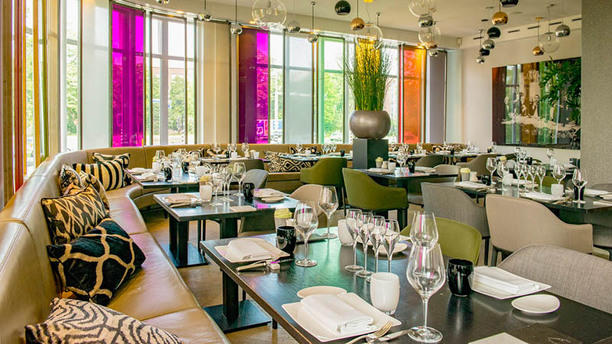
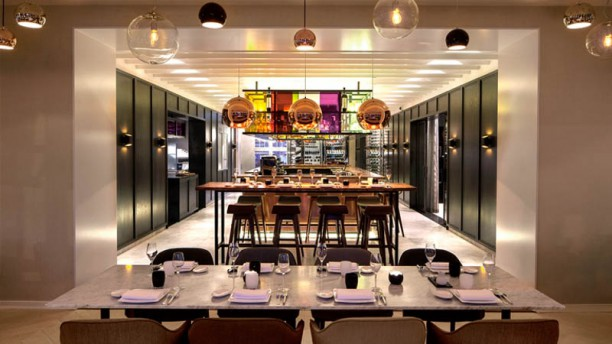
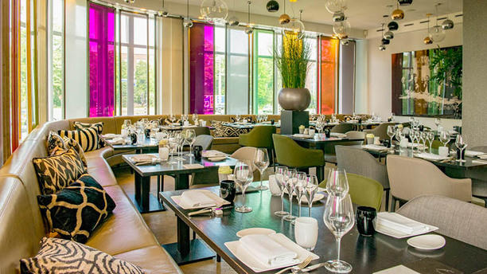

Restaurants in 's-Hertogenbosch
's-Hertogenbosch kent vele mooie restaurants waar veel gezelligheid te combineren is met een lekker hapje eten. Maar omdat er een groot aanbod aan restaurants is, is het lastig om een goed restaurant uit te kiezen. Om het kiezen van een restaurant in de buurt van Den Bosch voor u iets makkelijker te maken, hebben wij deze website gemaakt. Op deze website kunt u veel recensies vinden.
Fabuleux
Een zeer bekend restaurant in Den Bosch is Fabuleux. Dit is een restaurant in het centrum van Den Bosch.
Fabuleux is van dinsdag t/m zaterdag geopend. Fabuleux is vanwege de locatie ook geschikt voor feesten, trouwerijen, borrels etc.
Bij Fabuleux heeft u al een 3-gangen verrassingsmenu vanaf €43,00. Maar naast dat Fabuleux geschikt is voor een leuk diner met een leuke sfeer,
is Fabuleux ook geschikt voor de lunch. Dit is echter alleen mogelijk op woensdag, donderdag en vrijdag.
klik hier om te reserveren bij Fabuleux.
Sense
Naast Fabuleux zijn er nog vele andere leuke restaurant in Den Bosch. Restaurant Sense is hier een goed voorbeeld van.
Dit is luxe restaurant in het centrum van 's-Hertogenbosch.
Bij Sense kunt u van maandag t/m zaterdag terecht voor een lekker diner en van dinsdag t/m zaterdag voor de lunch.
Sense is het enige restaurant in Den Bosch met een Michelinster, dit heeft het restaurant te danken aan te kwaliteiten van hun chefkok Dennis Middeldorp.
Bij Sense heeft u al een 3-gangen verrassingsmenu vanaf €48,00.
Naast dat Sense een zeer goed restaurant heeft, is Sense ook een goed hotel. Daarom kunt u bij Sense uw overnachting ook combineren
met een etentje bij Sense. Zo kost een arrangement inclusief eten en overnachting minimaal €307,00.
Klik hier om te reserveren bij Sense. (Dit kan alleen online voor max. 5 personen)
Noble
Naast Fabuleux en Sense zijn er nog veel goede, lekkere en gezellige restaurants. Restaurant Noble past bijvoorbeeld ook heel goed
in het rijtje van goede restaurants in Den Bosch. Restaurant Noble is een luxe restaurant gelegen aan de rand van Den Bosch.
Bij Noble kunt u heerlijk dineren met uitzicht op de Bossche Broek. Bij Noble heeft u al een uniek Noble experience menu voor €62,00.
Dit menu is zo samengesteld dat u de unieke ervaring van Noble optimaal kunt ervaren.
 



Klik hier om te reserveren bij restaurant Noble.